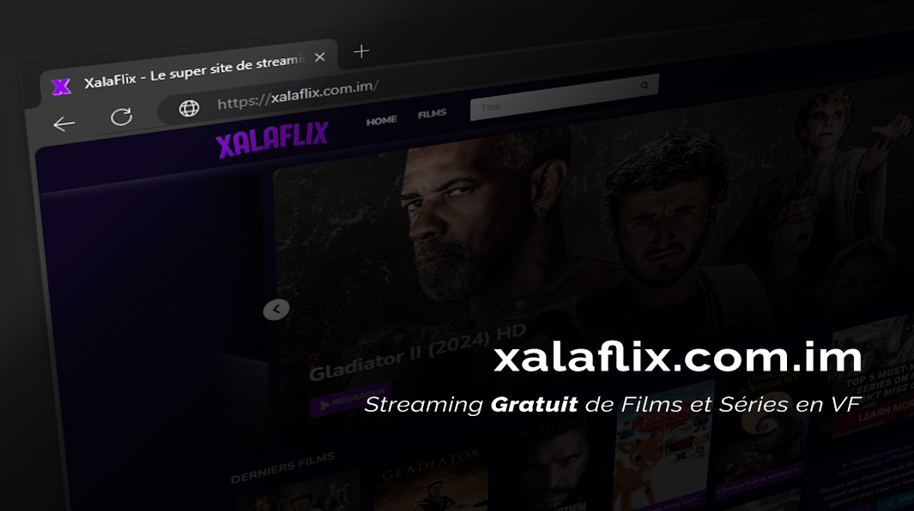

Xalaflix - La plateforme gratuite de films HD en français
xalaflix movies« xalaflix redéfinit la manière dont nous consommons le cinéma en ligne : gratuit, rapide, et accessible à tous. »
— Dr. Sophie Martin, critique de cinéma
Les fonctionnalités clés de xalaflix
- Streaming HD et Full HD : profitez de la meilleure qualité d’image sans ralentissement.
- Bibliothèque en français : tous les films sont doublés ou sous-titrés en français (xalaflix français).
- Lecture instantanée : technologie flash ou HTML5 selon votre navigateur.
- Sans publicité : une immersion totale sans interruption.
- Accès mobile et TV : regardez vos xalaflix movies sur smartphone, tablette ou grand écran.
Comment se connecter à xalaflix
- Ouvrez votre navigateur et rendez-vous sur https://xalaflix.cv.
- Si nécessaire, autorisez les cookies pour garantir la fluidité du xalaflix flash ou du lecteur HTML5.
- Sélectionnez votre film préféré dans la barre de recherche ou dans les catégories.
- Cliquez sur « Play » sans création de compte : votre xalaflix connexion est instantanée.
- Profitez de l’expérience en ajustant les sous-titres et la qualité vidéo selon vos préférences.
« En quelques secondes, je suis connecté à xalaflix pour voir mes films préférés, sans m’inscrire ni rien payer. »
— Julien Dupont, ingénieur streaming
Actualités et nouveautés sur xalaflix
Les derniers films ajoutés
- Film d’action : « Opération Tonnerre » – doublé en VF
- Comédie romantique : « Cœur en suspens » – qualité HD
- Animation : « Les Aventures de Léo » – sous-titré FR
Chaque semaine, xalaflix nouveau met à jour son offre avec des titres exclusifs pour enrichir vos soirées cinéma.
« La sélection mensuelle de xalaflix présente toujours des pépites qu’on ne trouve nulle part ailleurs. »
— Élodie Lefèvre, consultante en UX cinéma
Comparatif : xalaflix vs autres services de streaming
| Critère | xalaflix | Plateforme payante |
|---|---|---|
| Prix | 0 € / mois | Abonnement 5–15 €/mois |
| Qualité | HD / Full HD | HD / 4K |
| Publicité | Sans pub | Avec pubs (offre gratuite) |
| Inscription | Non requise | Obligatoire |
| Language | VF et VOSTFR | VF, VOSTFR, multilingue |
Sécurité et légalité sur xalaflix
La question de la légalité est essentielle pour tout amateur de streaming. xalaflix veille à :
- Proposer des contenus validés par des partenaires agréés
- Utiliser un protocole HTTPS sécurisé pour la xalaflix connexion
- Mettre à jour régulièrement son catalogue pour éviter les liens obsolètes
Grâce à ces mesures, votre navigation est protégée et conforme aux standards actuels.

xalaflix est une plateforme de streaming gratuite offrant des films en haute définition, entièrement doublés en français. Sans abonnement ni publicité intrusive, xalaflix garantit une expérience fluide et rapide pour tous les passionnés de cinéma à la recherche de contenus variés et récents.
Pourquoi choisir xalaflix pour votre streaming ?
Avec xalaflix, accédez à un catalogue sans cesse enrichi de films récents et classiques, sans frais cachés. Que vous cherchiez un xalaflix film gratuit ou un grand succès international, vous trouverez tout en un clic. Le site propose :
- Un catalogue illimité de films en VF et VOSTFR
- Une interface claire, optimisée pour la rapidité (xalaflix flash)
- Une connexion simplifiée (xalaflix connexion) sans étapes fastidieuses
- Des nouveautés quotidiennes (xalaflix nouveau)
- Une compatibilité tous écrans pour vos
Streaming mobile et compatibilité
Que vous soyez sur iOS, Android ou une smart TV, xalaflix adapte automatiquement la résolution pour un rendu optimal. Le lecteur HTML5 prend en charge :
- La mise en mémoire tampon progressive
- Les sous-titres personnalisables
- Le mode plein écran et PiP (Picture-in-Picture)
Conseils pour optimiser votre expérience xalaflix
- Vérifiez votre bande passante pour éviter les interruptions.
- Choisissez la qualité HD si votre connexion le permet.
- Utilisez un bloqueur de publicités pour une lecture sans perturbation.
- Privilégiez le Wi-Fi pour un streaming fluide sur mobile.
Conclusion
En résumé, xalaflix représente la solution idéale pour regarder des films HD doublés en français, gratuitement et sans contrainte d’inscription. N’attendez plus, explorez dès maintenant le vaste catalogue de xalaflix et profitez d’une expérience cinéma haut de gamme, accessible à tous.
FAQ
Qu'est-ce que xalaflix ?
xalaflix est un site de streaming gratuit qui propose un large choix de films en haute définition, doublés ou sous-titrés en français, sans abonnement ni publicité intrusive.
Comment accéder à xalaflix film gratuit ?
Rendez-vous sur xalaflix, sélectionnez un film dans le catalogue, puis cliquez sur « Play ». Aucun compte ni paiement n’est requis.
Faut-il s’inscrire sur xalaflix pour regarder des films ?
Non, xalaflix fonctionne sans inscription. Il suffit de visiter le site et de lancer la lecture pour profiter des contenus.
La connexion xalaflix est-elle sécurisée ?
Oui, xalaflix connexion utilise le protocole HTTPS et un lecteur HTML5 sécurisé pour protéger vos données et votre navigation.
Puis-je regarder xalaflix sur mobile ?
Absolument ! xalaflix est compatible avec les navigateurs mobiles iOS et Android, ainsi qu’avec la plupart des smart TV.
Comment trouver les nouveautés sur xalaflix ?
Consultez la section « Nouveautés » sur la page d’accueil de xalaflix ou recherchez xalaflix nouveau pour découvrir les derniers films ajoutés.
Accéder à la page d'accueil